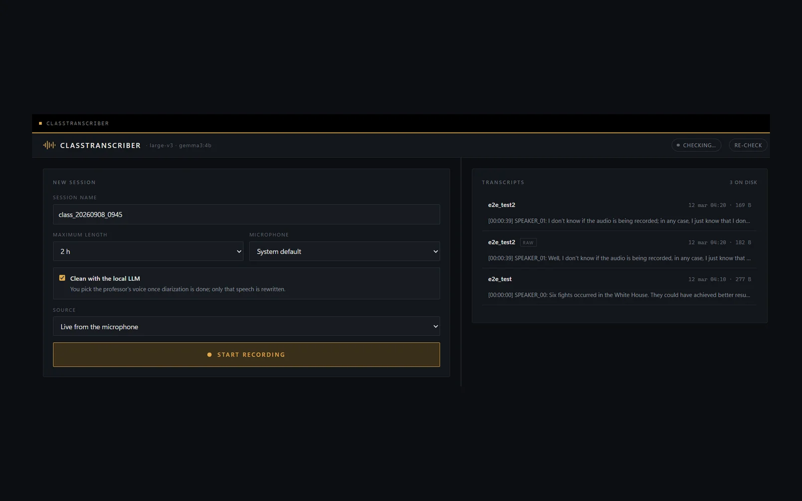

ClassTranscriber
Lecture recordings are close to useless in their raw form: an hour of audio, several people talking, room noise, and no way to find the one explanation you actually wanted. ClassTranscriber is a local CLI tool that turns that into a clean [Speaker] → [Text] transcript.
It is a modular seven-stage pipeline: Recorder, Preprocessor, Diarizer, Transcriber, Merger, Cleaner, Exporter. Capture and preprocessing handle spectral noise reduction with noisereduce and amplitude normalisation with NumPy; pyannote.audio separates the speakers; faster-whisper does the transcription; and a local Gemma through Ollama cleans up grammar, filler words and accent artifacts.
The stage I underestimated was the Merger. Diarisation and transcription produce two independent sets of timestamps that do not line up, and reconciling them into one coherent speaker-labelled transcript is a fiddly alignment problem rather than a model problem. Most of the perceived quality of the output comes from getting that right.
The architecture is privacy-first by design: 100% on-device, CUDA-accelerated, no cloud APIs anywhere in the chain. That constraint rules out the easy hosted endpoint at every stage and forces real decisions about model size and staging. Backed by 30+ pytest unit tests with mocking for the external integrations.
It works. I stopped using it. By the time it was finished, my note-taking had moved to Perseo.
- Stack
- Python, PyTorch, CUDA, faster-whisper, pyannote.audio, Ollama, pytest
- Status
- Complete · no longer in use
- Year
- 2025
- Code
- ClassTranscriber

Next: AutoLinkedIn